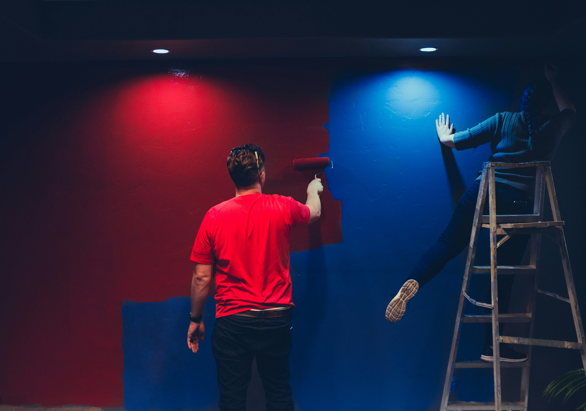

Transformación y Protección para Cada Superficie
En Hormigones y Pavimentos Los Primos completamos nuestras obras y reformas con un servicio especializado de pintura profesional tanto para chalets y viviendas residenciales como para locales comerciales, oficinas y naves industriales.
Sabemos que la clave de una pintura duradera radica en la preparación previa. No nos limitamos a dar manos de pintura: tapamos y encintamos suelos, marcos y mobiliario, reparamos grietas, desconchones y humedades con masillas elásticas e imprimaciones fijadoras antes de aplicar las capas de terminación.
Trabajamos con pinturas plásticas lavables de alta transpirabilidad para interiores, revestimientos impermeabilizantes elásticos para fachadas exteriores y resinas epoxídicas para garajes o suelos comerciales con alta exigencia mecánica.
SOLUCIONES DE PINTURA A MEDIDA
Materiales específicos para cada estancia, fachada o pavimento

Pintura Interior de Casas
Eliminación de gota (alisado de paredes), aplicación de pinturas plásticas antimoho lavables y acabados sedosos en habitaciones, salones y techos.

Fachadas y Muros Exteriores
Revestimientos elásticos con puente de unión y protección hidrófuga que resisten la lluvia batiente, cambios bruscos de temperatura y hongos.

Locales Comerciales y Naves
Renovación rápida con horarios adaptados para no interrumpir tu negocio. Pintura de techos industriales, paredes de pladur y señalización de suelos.

Epoxi para Garajes y Parkings
Resina epoxídica de alta resistencia para soleras de hormigón que no desprenden polvo, facilitan el lavado y resisten el tráfico de neumáticos calientes.
NUESTRO MÉTODO DE TRABAJO
Orden, máxima protección de tu espacio y limpieza exhaustiva al finalizar
Protección Exhaustiva
Cubrimos suelos, rodapiés, enchufes, carpintería y muebles con plásticos y cinta de carrocero para cero salpicaduras.
Saneado y Masillado
Reparación de grietas, fisuras, agujeros y zonas con desconchones mediante masilla elástica y posterior lijado fino.
Imprimación Fijadora
Aplicación de una base selladora para unificar la absorción de la pared y asegurar una adherencia inalterable.
Aplicación de Capas
Mano de fondo y mano de terminación con rodillos profesionales o pistola airless para una cubrición 100% uniforme.
Revisión y Limpieza
Retirada de todas las protecciones, repaso detallado de remates y entrega de la estancia completamente limpia y lista.
¿Necesitas pintar tu casa, local o fachada?
Llámanos o escríbenos para valorar los metros a pintar y entregarte un presupuesto detallado sin compromiso.